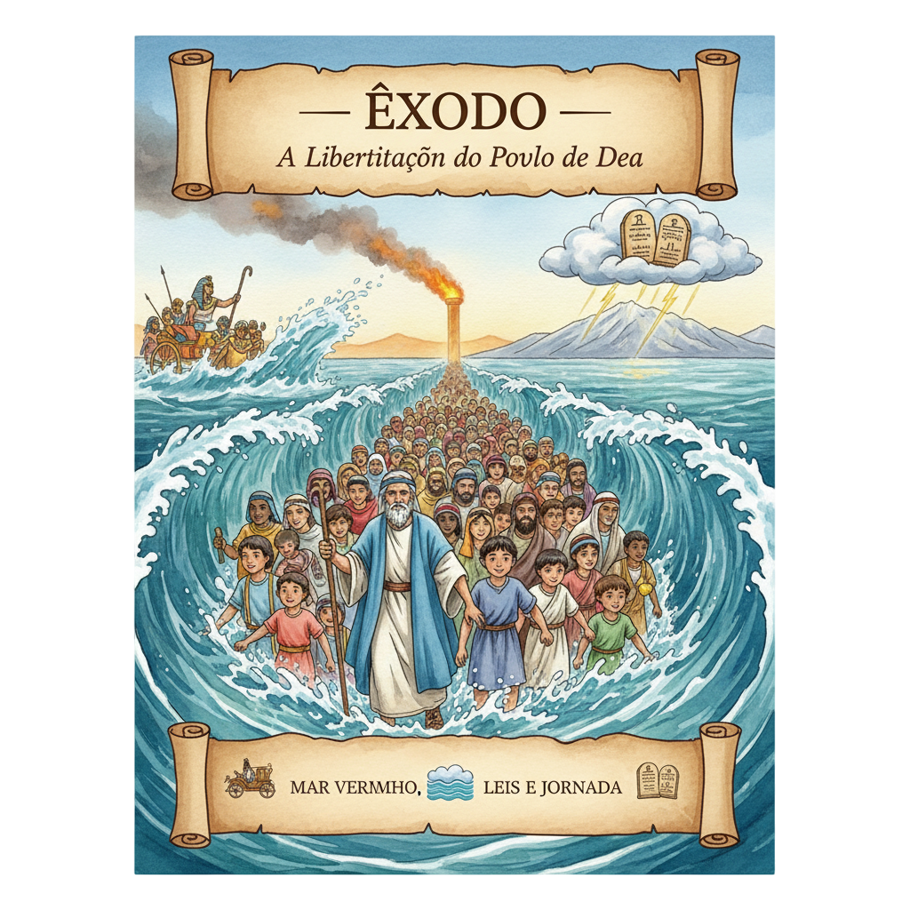
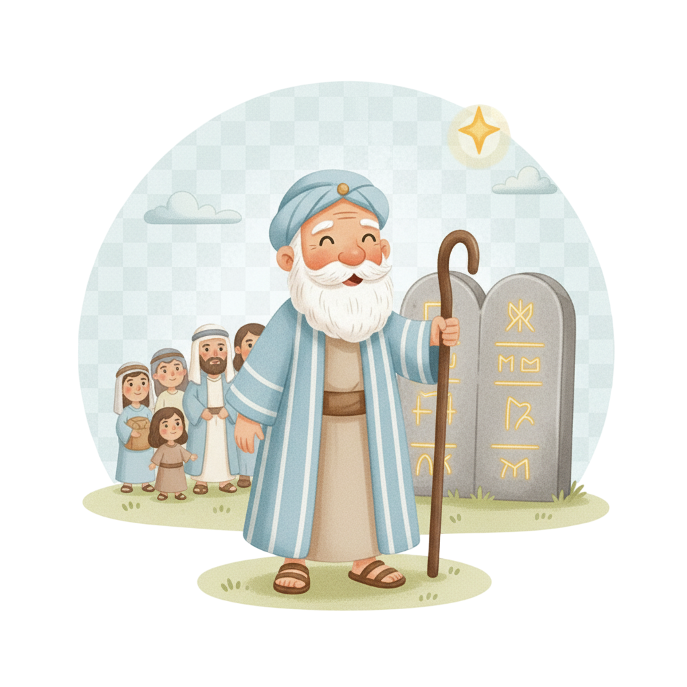
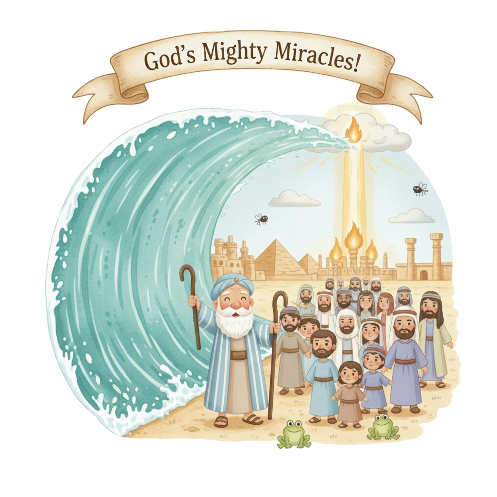
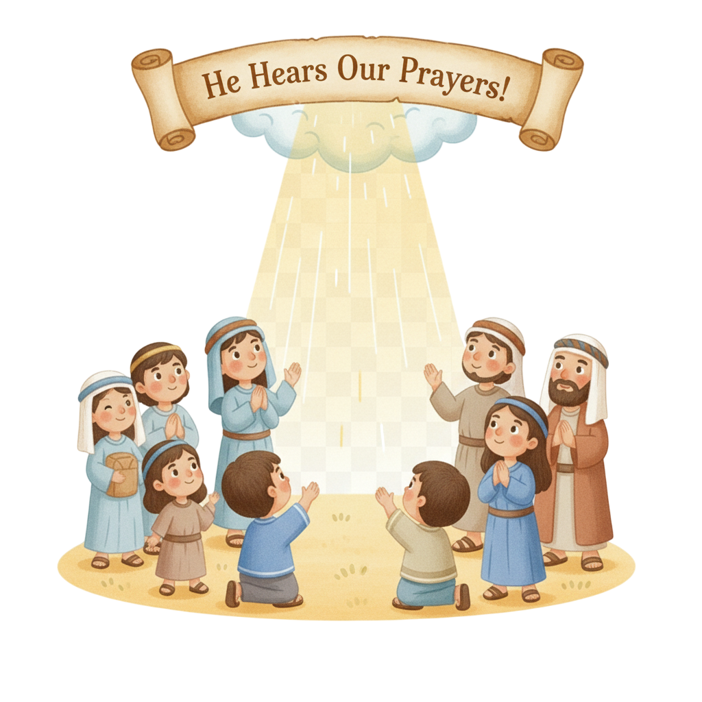
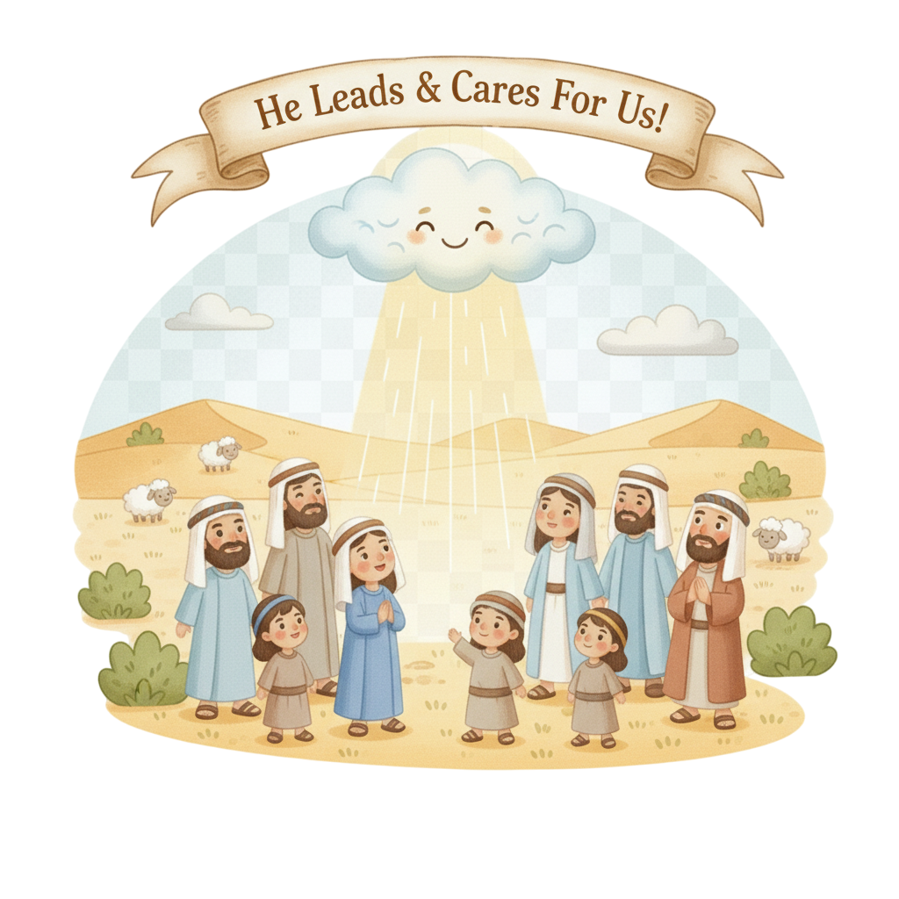

A Grande Libertação — Um Resumo Visual para Crianças
Quando o povo clamou, Deus ouviu,
Do Egito escuro, a liberdade surgiu!
Com pragas e poder, o mar se abriu,
E o povo de Deus, livre, sorriu!
📖 Êxodo 3:7 — "Tenho visto a aflição do meu povo... e ouvi o seu clamor."
No Monte Sinai, a lei foi dada,
Dez mandamentos, bússola sagrada!
Amar a Deus e ao próximo também,
É o caminho que nos faz tão bem!
📖 Êxodo 20:2 — "Eu sou o Senhor teu Deus, que te tirei da terra do Egito."
O Tabernáculo foi construído com amor,
Para que Deus habitasse em esplendor!
Ele quer estar sempre ao nosso lado,
Nosso amigo, protetor e amado!
📖 Êxodo 25:8 — "Farão um santuário para mim, e habitarei no meio deles."
"O Senhor pelejará por vós, e vós vos calareis."
— Êxodo 14:14
🌊 O que isso significa? O exército do Faraó vinha atrás, o Mar Vermelho estava na frente — e Deus disse: "Eu vou lutar por vocês, não precisam entrar em pânico!" Quando as situações parecem impossíveis, você pode confiar: Deus está no controle. Às vezes, o maior ato de fé é simplesmente ficar quieto e deixar Deus agir!

Criado no palácio do Faraó, fugiu para o deserto e lá Deus o encontrou numa sarça em chamas. Ele resistiu, duvidou, mas foi e conduziu 600 mil homens (mais as mulheres e crianças!) para fora do Egito!
📖 Ex 3:10 — "Agora pois vem, e te enviarei ao Faraó, para que tires o meu povo, os filhos de Israel, do Egito."
O rei mais poderoso do mundo na época teimou em não deixar o povo ir. Precisou de 10 pragas devastadoras para finalmente ceder — e mesmo assim, foi atrás deles! O orgulho tem um preço muito alto.
📖 Ex 5:2 — "Quem é o Senhor, para que eu lhe obedeça... Não conheço o Senhor."
Irmã de Moisés, ela o salvou quando bebê ao colocá-lo no rio. Depois da travessia do Mar Vermelho, ela liderou as mulheres com pandeiros e dança em louvor a Deus — a primeira celebração de culto!
📖 Ex 15:21 — "Cantai ao Senhor, pois magnificamente triunfou; lançou ao mar o cavalo e o seu cavaleiro."
Em Êxodo, Deus revela Seu nome mais sagrado: YHWH — "EU SOU". Ele não é um deus distante; é o Deus que está presente, que vê, que ouve, que age. Ele aparece em fogo, nuvem e trovão!
📖 Ex 3:14 — "EU SOU O QUE SOU... Assim dirás aos filhos de Israel: EU SOU me enviou a vós."
Israel estava escravizado há 400 anos. Deus ouviu o clamor do povo e chamou Moisés na sarça ardente. A missão parecia impossível — mas Deus prometeu: "Eu estarei contigo!"
📖 Ex 3:12 — "E disse Deus: Certamente eu serei contigo."
Cada praga derrubava um deus egípcio — Deus mostrava que era o único Deus verdadeiro! A décima praga foi a mais séria: a morte dos primogênitos. O sangue do cordeiro na porta protegia quem cresse.
📖 Ex 12:13 — "O sangue será o sinal... e passarei por alto." (origem da Páscoa!)
O mar se abriu, o povo atravessou em terra seca! No deserto, Deus enviou maná do céu todo dia, água da pedra e conduziu o povo com nuvem de dia e fogo à noite — nunca sozinhos!
📖 Ex 16:4 — "Eis que farei chover pão do céu para vós."
No Monte Sinai, entre trovões e relâmpagos, Deus deu as leis para Seu povo viver bem. E depois deu as instruções detalhadas do Tabernáculo — porque Ele queria morar no meio do povo!
📖 Ex 20:3 — "Não terás outros deuses diante de mim."


Israel gemia há 400 anos — e Deus ouviu! Isso nos ensina que nenhum sofrimento passa despercebido por Deus. Quando você chora ou pede ajuda, Ele escuta. Sempre.
📖 Ex 3:7 — "Tenho visto a aflição do meu povo... e ouvi o seu clamor por causa dos seus exatores."
O sangue do cordeiro na porta protegia os israelitas da morte. Séculos depois, Jesus — o Cordeiro de Deus — deu Seu sangue para nos proteger para sempre. A Páscoa de Êxodo aponta direto para a cruz!
📖 Ex 12:13 — "Quando eu vir o sangue, passarei por alto."
Nuvem de dia, fogo à noite — Deus foi na frente o tempo todo! Você nunca está sozinho no seu caminho. Quando você não sabe para onde ir, Deus conhece o destino e vai guiar seus passos.
📖 Ex 13:21 — "O Senhor ia adiante deles... em coluna de nuvem... e em coluna de fogo."
Êxodo mostra quem Deus é de verdade: Ele vê a opressão, ouve o clamor e age com poder para libertar. Todo o Novo Testamento usa Êxodo como imagem da salvação que Jesus traz.
📖 Ex 6:6 — "Eu sou o Senhor, e vos tirarei dos trabalhos forçados do Egito."
Os 10 Mandamentos não foram dados para escravizar — foram dados a um povo já livre! São o manual de como uma família de Deus vive bem: amando a Deus e ao próximo.
📖 Ex 20:2 — "Eu sou o Senhor teu Deus, que te tirei..." — Deus lembra: sou eu quem libertou primeiro!
O Tabernáculo ocupou metade do livro de Êxodo porque esse era o coração do projeto de Deus: habitar no meio do Seu povo. Isso se cumpre plenamente em Jesus — "o Verbo se fez carne e habitou entre nós"!
📖 Ex 40:34 — "Então a nuvem cobriu a tenda da congregação, e a glória do Senhor encheu o tabernáculo."

A palavra vem do grego e significa "saída". Mas não foi só sair do Egito — foi sair da escravidão para a liberdade, das trevas para a luz. É exatamente o que Jesus faz por cada pessoa que crê nEle!
Os egípcios tinham deus do Nilo (virou sangue), deusa rã (praga de rãs), deus sol (escuridão)... Cada uma das 10 pragas foi uma resposta direta a um deus egípcio. Deus estava mostrando: "Eu sou o único Deus verdadeiro!"
Deus enviou maná — pão do céu — todos os dias por 40 anos no deserto. Só parou quando entraram na Terra Prometida. Isso deu de comer para mais de 2 milhões de pessoas! Deus é o melhor provedor que existe.
Moisés disse: "Quem sou eu para ir?" (Ex 3:11) — ele se achava incapaz. Deus respondeu: "Eu estarei contigo." Quando você sente que não é capaz de fazer algo, o que a resposta de Deus a Moisés te diz?
O povo estava entre o exército do Faraó e o mar — parecia o fim! Deus abriu o mar. Você já teve uma situação que parecia impossível e Deus resolveu de um jeito que você não esperava?
Deus deu os mandamentos a um povo já liberto — como um presente, não como uma prisão. Como você enxerga as regras que Deus e seus pais te dão: como prisão ou como proteção?
Escreva Êxodo 14:14 e leve com você esta semana. Quando sentir medo ou pressão, leia em voz alta: "O Senhor pelejará por mim!" — e respire fundo, confiando que Deus está agindo.
Tente memorizar os 10 Mandamentos (Ex 20). Comece pelos primeiros 5 esta semana. Para cada um, pense em um exemplo prático de como você pode viver aquilo no seu dia a dia!
Deus ouviu o clamor de Israel (Ex 3:7). Esta semana, reserve um momento para orar honestamente sobre uma coisa difícil na sua vida — como se você estivesse falando com alguém que realmente ouve!
© 2025 - Trilho Kids
Desenvolvido com ❤️ para crianças